Craft & range.
Before the AI work and the leadership, I spent two decades making complex things beautiful — and making beautiful things useful. A sample.
Design Stories
Here are a few worth telling.
NASA HQ · Media Fusion
Books for the space program.
Led design & production on NASA’s award-winning books and ebooks; personally produced 10,000+ pages, and led nasa.gov/ebooks.
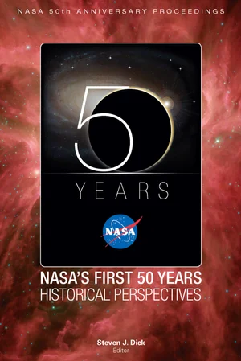
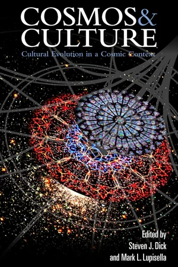
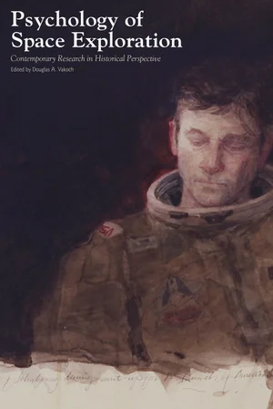
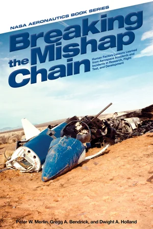
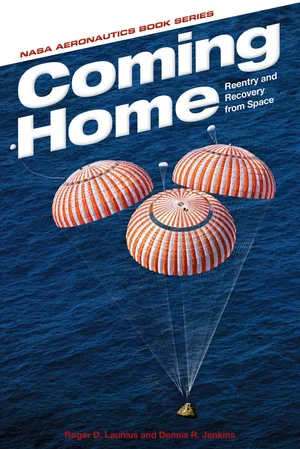
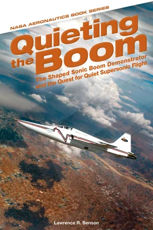
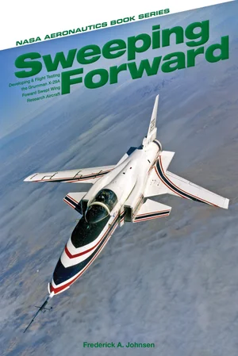
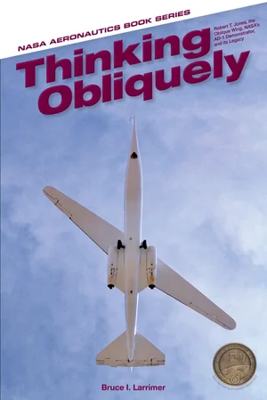
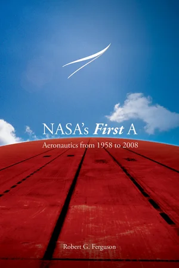
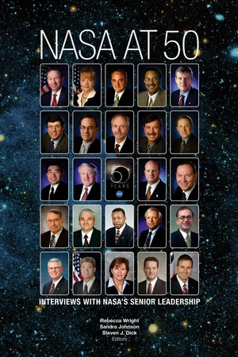
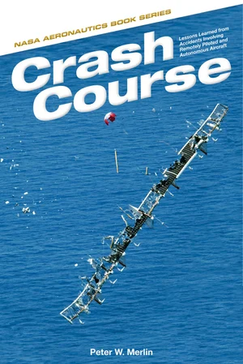
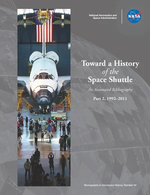
K12 / Stride
Textbooks, by the shelf-full.
Designed a 56-volume K–3 science series, US-history and reference titles, and trained teams on the tools that made them.
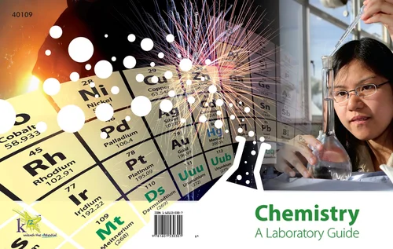
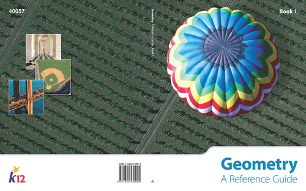
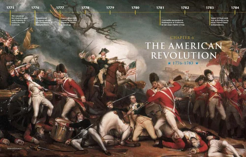